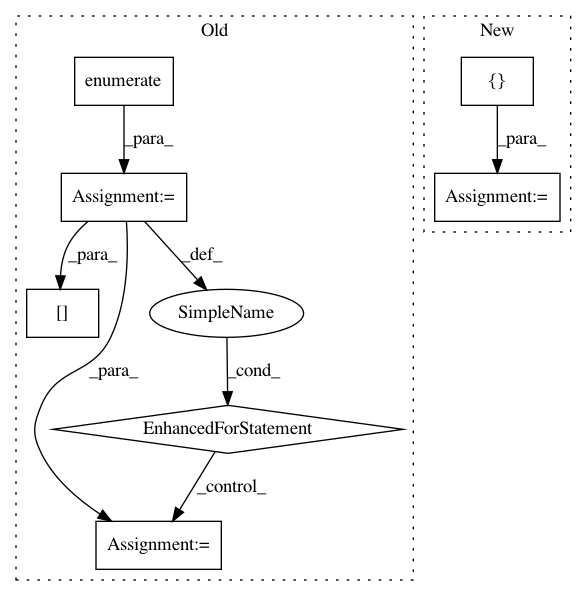

f8d9a6c144ef84bad2478a4ba4eedb1c559274e0,skimage/_shared/coord.py,,ensure_spacing,#,5
Before Change
indices = tree.query_ball_point(coord, r=spacing, p=p_norm)
rejected_peaks_indices = set()
for idx, candidates in enumerate(indices):
if idx not in rejected_peaks_indices:
// keep current point and the points at exactly spacing from it
candidates.remove(idx)
dist = distance.cdist([coord[idx]],
coord[candidates],
distance.minkowski,
p=p_norm).reshape(-1)
candidates = [c for c, d in zip(candidates, dist)
if d < spacing]
// candidates.remove(keep)
rejected_peaks_indices.update(candidates)
// Remove the peaks that are too close to each other
output = np.delete(coord, tuple(rejected_peaks_indices), axis=0)
return output
After Change
output = np.zeros((0, coords.shape[1]))
for batch in batch_list:
output = _ensure_spacing(np.vstack([output, batch]),
spacing, p_norm)
return output
In pattern: SUPERPATTERN
Frequency: 3
Non-data size: 7
Instances
Project Name: scikit-image/scikit-image
Commit Name: f8d9a6c144ef84bad2478a4ba4eedb1c559274e0
Time: 2020-11-11
Author: rfezzani@gmail.com
File Name: skimage/_shared/coord.py
Class Name:
Method Name: ensure_spacing
Project Name: data61/python-paillier
Commit Name: 8184b9fdf51e3f75835fe1f2d56c294d16686241
Time: 2017-06-20
Author: giorgio.patrini@anu.edu.au
File Name: examples/federated_learning_with_encryption.py
Class Name:
Method Name:
Project Name: daavoo/pyntcloud
Commit Name: 59ec6660464bd378b20d4ae200c7614133a9a38b
Time: 2019-08-26
Author: hc.wang96@gmail.com
File Name: pyntcloud/samplers/points.py
Class Name: FarthestPointsSampler
Method Name: compute